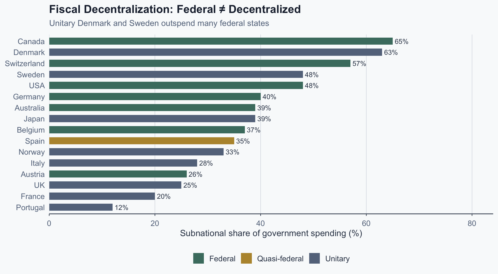
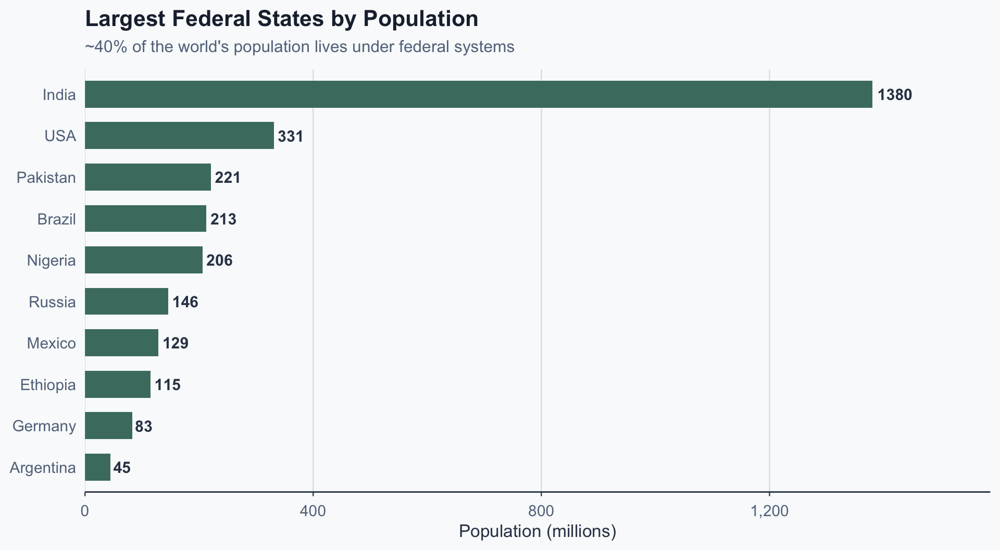
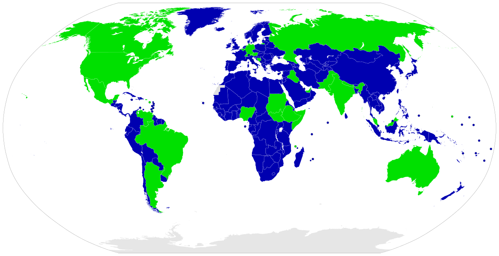
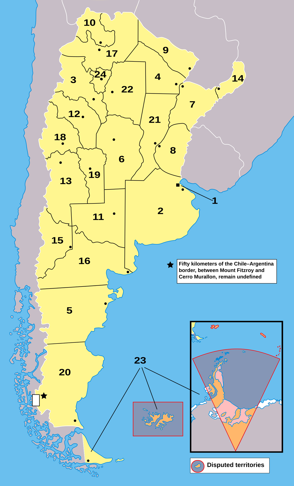
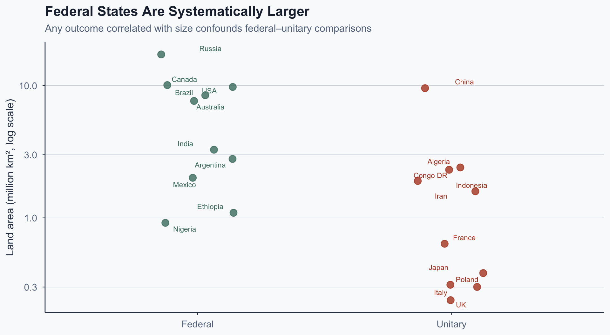
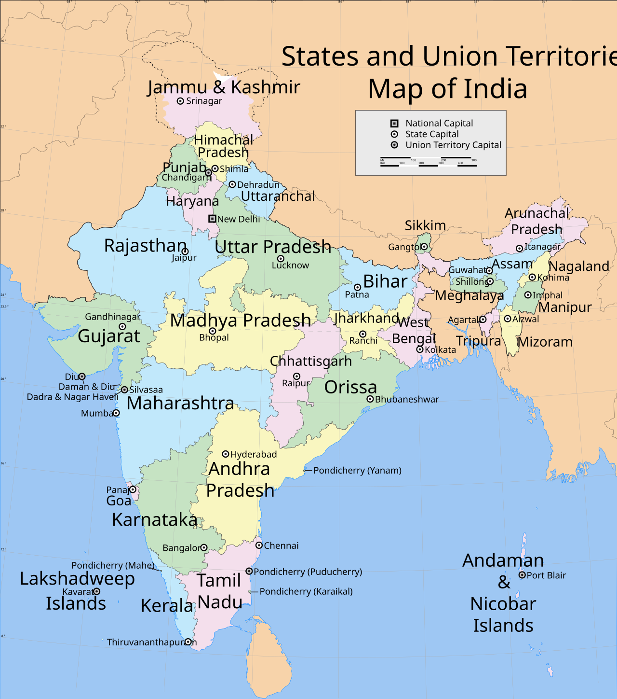

![]()
%%{init: {'theme': 'base', 'themeVariables': {'fontSize': '20px', 'primaryColor': '#4a7c6f', 'primaryTextColor': '#1e293b', 'lineColor': '#334155', 'primaryBorderColor': '#334155'}, 'flowchart': {'useMaxWidth': true, 'nodeSpacing': 50, 'rankSpacing': 70}}}%%
flowchart LR
A["<b>Unitary</b><br/>France, Japan<br/>Power held<br/>at center"] --> B["<b>Devolved</b><br/>UK, Spain<br/>Power delegated,<br/>revocable"]
B --> C["<b>Federal</b><br/>USA, Germany<br/>Power constitutionally<br/>divided"]
C --> D["<b>Confederation</b><br/>EU, Swiss pre-1848<br/>Sovereign units<br/>pool functions"]
style A fill:#f9fafb,stroke:#334155,stroke-width:2px
style B fill:#f9fafb,stroke:#334155,stroke-width:2px
style C fill:#e8f5e9,stroke:#4a7c6f,stroke-width:3px
style D fill:#f9fafb,stroke:#334155,stroke-width:2px
Comparative Politics
Lecture 12: Federal Arrangements
I. What Is Federalism?
The Puzzle
~40% of the world’s population lives under federal systems. It is the most common institutional response to governing large, diverse societies.
- But the same institution that accommodates diversity can entrench it
- The same structure that checks power can shield autocracy
- The same design that promises accountability can fragment it
- This lecture builds toward one claim: federalism is a channel, not a cause — its effects depend on the political configuration it operates within
Defining Federalism
Riker (1964): government activities divided between central and regional governments, each with final authority in at least one area.
- Sovereignty is constitutionally divided — not merely delegated
- Subnational units hold autonomous legislative authority
- Central government cannot unilaterally abolish regional powers
- This distinguishes federalism from mere decentralization
The Spectrum of Territorial Organization
Federalism ≠ Decentralization
- Decentralization: center delegates tasks to local agents
- Can be reversed by ordinary legislation
- Federalism: regions hold constitutionally guaranteed authority
- Requires constitutional amendment to change
- Denmark is highly decentralized but strictly unitary
- Austria is federal but relatively centralized
- The legal guarantee is the defining criterion
Federal ≠ Decentralized: The Evidence

Figure 1: Subnational expenditure as % of total government spending. Source: OECD (2019).
Institutional Features of Federal Systems
- Written constitution allocating powers to each level
- Bicameral legislature with a territorial chamber
- US Senate, German Bundesrat, Indian Rajya Sabha
- Constitutional court to adjudicate disputes
- Subnational governments with own revenue and policy authority
- Amendment rules requiring subnational consent
Federal States in the World

Figure 2: Population in millions. Source: UN Population Division (2020).
Where Are Federal States?

Federal (green) vs. unitary (blue) states worldwide. Source: Wikimedia Commons (CC BY-SA 3.0).
Exercise 1
Same Institution, Opposite Outcomes (5 min)
Consider two formally federal states:
- USA: federalism widely credited with protecting democracy — opposition parties control states, courts check the executive
- Mexico (1929–2000): the PRI governed for 71 years; the federal structure existed on paper, but every level of government was controlled by the same party
Both had constitutional divisions of power between center and regions.
If the institution is the same, what explains the opposite outcomes? What does this tell you about what federalism actually does?
II. Origins: Why Federalism?
Riker’s Bargain Theory
Riker (1964): Federalism is a constitutional bargain between elites.
- Expansion condition: leaders seek to extend territory without the cost of unitary conquest
- Defense condition: leaders face an external military threat and pool sovereignty to survive
- Both sides gain: center gets scale, regions keep autonomy
The Logic of the Federal Bargain
%%{init: {'theme': 'base', 'themeVariables': {'fontSize': '20px', 'primaryColor': '#4a7c6f', 'primaryTextColor': '#1e293b', 'lineColor': '#334155', 'primaryBorderColor': '#334155'}, 'flowchart': {'useMaxWidth': true, 'nodeSpacing': 40, 'rankSpacing': 60}}}%%
flowchart LR
A["<b>External threat</b><br/>or expansion<br/>opportunity"] --> B["<b>Center offers</b><br/>military protection<br/>+ shared resources"]
A --> C["<b>Regions offer</b><br/>territory + taxes<br/>+ political support"]
B --> D["<b>Federal<br/>bargain</b>"]
C --> D
D --> E["<b>Constitutional<br/>guarantee:</b><br/>autonomy preserved"]
style A fill:#fff3e0,stroke:#b7943a,stroke-width:2px
style B fill:#e8f5e9,stroke:#4a7c6f,stroke-width:2px
style C fill:#e8f5e9,stroke:#4a7c6f,stroke-width:2px
style D fill:#f9fafb,stroke:#b44527,stroke-width:3px
style E fill:#f9fafb,stroke:#334155,stroke-width:2px
Stepan’s Critique: Two Paths
Stepan (1999) argues Riker’s model fits only one type.
- “Coming together” — independent units voluntarily unite
- USA (1787), Switzerland (1848), Australia (1901)
- “Holding together” — center devolves to prevent breakup
- India (1950), Belgium (1993), Spain (1978)
- “Coming together” matches Riker’s bargain logic
- “Holding together” is an elite response to diversity
- Most federations worldwide are “holding together”
Two Paths to Federalism
| Coming Together | Holding Together | |
|---|---|---|
| Direction | Bottom-up | Top-down |
| Motivation | Security, expansion | Prevent secession |
| Symmetry | Typically symmetric | Often asymmetric |
| Examples | USA, Switzerland | India, Belgium, Spain |
| Riker applies? | Yes | Partially |
Colonial Legacies and Indirect Rule
- Colonial powers governed diverse territories through indirect rule
- Pre-existing political units preserved for administrative convenience
- Post-independence, these units became building blocks of federalism
- Nigeria: British preserved Hausa, Yoruba, Igbo regional structures
- India: the Raj consolidated ~550 princely states and provinces
- Indirect rule → heterogeneous institutions → federal paths (Gerring et al., 2011)
The Diversity Hypothesis
- Intuition: ethnically diverse countries need federalism
- Some evidence: Nigeria, India, Ethiopia, Belgium
- But the relationship is not mechanical
- Indonesia: extremely diverse, strictly unitary
- Tanzania: diverse, unitary, relatively stable
- What matters: whether diversity is regionally concentrated
- Diversity may make federalism more likely — but does it make it work?
III. Three Promises and Their Dark Mirrors
What Federalism Is Supposed to Do
Federalism is defended on three grounds:
- Match policies to preferences — local governments serve diverse needs (Tiebout, Oates)
- Check central power — multiple levels create veto points (Tsebelis)
- Accommodate diversity — minorities get self-governance
Each of these promises has a dark mirror. That is the subject of this section.
The Subsidiarity Promise
The standard optimistic case for federalism (Promise I):
- Tiebout (1956): citizens “vote with their feet”
- Competition between jurisdictions improves governance
- Preference-matching: local governments serve diverse needs
- Accountability: officials closer to voters face tighter scrutiny
- Policy experimentation: states as “laboratories of democracy”
- This is the logic behind fiscal federalism theory (Oates, 1972)
Dark Mirror I: Gibson’s Boundary Control
Gibson (2012): The standard story says federalism disperses power and checks authoritarianism. Gibson inverts it.
- Federal structures give provincial elites autonomous institutional resources
- These resources can be used to seal off subnational politics from national competition
- Peripheral elites control who enters the political arena — and who doesn’t
- National democratization does not automatically penetrate downward
- This is not a marginal pathology — it is the normal condition of many federal systems
The Boundary Control Mechanism
%%{init: {'theme': 'base', 'themeVariables': {'fontSize': '18px', 'primaryColor': '#4a7c6f', 'primaryTextColor': '#1e293b', 'lineColor': '#334155', 'primaryBorderColor': '#334155'}, 'flowchart': {'useMaxWidth': true, 'nodeSpacing': 35, 'rankSpacing': 50}}}%%
flowchart LR
A["<b>Provincial elite</b><br/>controls local<br/>party + patronage"] --> B["<b>Blocks national<br/>opposition</b><br/>from subnational<br/>arena"]
B --> C["<b>Controls media</b><br/>+ local judicial<br/>appointments"]
C --> D["<b>Subnational<br/>authoritarianism</b><br/>persists"]
A --> E["<b>Delivers votes</b><br/>to national<br/>coalition"]
E --> F["<b>National leaders</b><br/>tolerate provincial<br/>autocracy"]
F --> D
style A fill:#fff3e0,stroke:#b7943a,stroke-width:2px
style B fill:#fbe9e7,stroke:#b44527,stroke-width:2px
style C fill:#fbe9e7,stroke:#b44527,stroke-width:2px
style D fill:#ffebee,stroke:#b44527,stroke-width:3px
style E fill:#e8f5e9,stroke:#4a7c6f,stroke-width:2px
style F fill:#e8f5e9,stroke:#4a7c6f,stroke-width:2px
Case: Argentina’s Provinces
- Argentina democratized nationally in 1983
- Provinces like Santiago del Estero and San Luis:
- Same families governed for decades; opposition effectively excluded
- Federal fiscal transfers funded provincial patronage machines
- National parties tolerated this in exchange for legislative votes
- Gibson’s provocation: not a corruption of federalism, but a structural consequence of how it distributes power

Exercise 2
Flipping the Mechanism (5 min)
The same provincial features — autonomous resources, local party control, fiscal transfers — can produce opposite outcomes:
- In Argentina → authoritarian entrenchment (Gibson)
- In other federations → democratic protection against central overreach
What specific condition flips the outcome? Identify the variable.
Federalism as a Veto Point (Promise II)
The standard institutionalist expectation:
- Multiple levels create veto points (Tsebelis, 2002)
- Executive overreach requires subnational compliance
- Federal courts arbitrate disputes between levels
- Subnational units serve as bases for opposition
- When the center turns authoritarian, states can resist
Dark Mirror II: When Veto Points Collapse
What happens when the center captures subnational units?
- If one party wins at both levels, veto points collapse
- Hungary after 2010: Fidesz won supermajority → constitutional rewrite
- Captured courts, media council, election commission; municipal autonomy stripped in 2011 — each colonized while formally preserved
- This is institutional capture, not institutional failure — the sequence matters
Dark Mirror III: Ethnofederalism
Roeder (2009): Promise III was that federalism accommodates diversity. But when federal boundaries map onto ethnic boundaries, federalism can entrench the divisions it was meant to manage.
- Regional identities harden into fixed political identities
- Elites mobilize along ethnic lines because that is where the resources are
- Control of territory becomes existential — groups cannot afford to lose “their” unit
- Secession becomes thinkable: the institutional infrastructure already exists
- Cases: Yugoslavia, Soviet Union, Ethiopia’s current crisis
Who Controls What Level?
The key insight from this section:
- Federalism per se neither strengthens nor weakens democracy
- What matters is who controls which level
- If opposition holds subnational units → federalism checks the center
- If one party dominates all levels → veto points collapse
- If peripheral elites capture provinces → federalism shields autocracy
- Federal structure is a channel, not a guarantee
IV. Identification Problems
The Selection Problem
Why comparing federal vs. unitary states is methodologically treacherous:
- Federal states are systematically different from unitary ones
- They tend to be larger, more diverse, and wealthier
- These same factors independently affect outcomes
- Any correlation (federalism → X) may be confounded
- We cannot randomly assign federalism to countries
What Covaries with Federalism?

Figure 3: Land area in million km². Source: World Bank (2020).
Better Research Designs
If cross-national comparison is confounded, what works?
- Subnational comparisons within a single federation
- Holds national institutions constant
- Border discontinuities at jurisdictional boundaries
- Policy differences at US state or Indian state borders
- Policy diffusion studies tracing reform spread across units
- Historical natural experiments — e.g., German reunification
The Broader Lesson
- Institutional effects are the hardest to identify in comparative politics
- Institutions do not appear randomly — they reflect their own causes
- This does not mean institutions are irrelevant
- It means we must be careful about how we demonstrate effects
V. Synthesis
The Argument
This lecture has built one claim:
Federalism is the most consequential institution in comparative politics whose effects we cannot confidently attribute to the institution itself.
- It is adopted for strategic reasons — bargains, threats, diversity management — not because it “works”
- The same structure produces opposite effects depending on who controls it (Gibson, Roeder, Tsebelis)
- We cannot cleanly identify its causal effects because it covaries with its own causes
- When someone says “federalism caused X,” ask: who was governing, at which level, and what would have happened without it?
Closing: The India Problem
Is India’s federal design the reason it held together as a democracy, or would it have regardless?
- We cannot answer this with current methods
- But it forces us to distinguish between:
- The institution (constitutional structure)
- The configuration (who governs where)
- The counterfactual (what would have happened otherwise)

The Honest State of the Field
- Until we can separate institution, configuration, and counterfactual, claims about federalism remain theoretically rich and empirically underdetermined
- That is not a failure of the literature — it is the nature of studying institutions that covary with their own causes
- The challenge ahead: better identification, not better theory
References
- Gerring, J., Ziblatt, D., Van Gorp, J. & Arevalo, J. (2011). An institutional theory of direct and indirect rule. World Politics, 63(3), 377–433.
- Gibson, E.L. (2012). Boundary Control: Subnational Authoritarianism in Federal Democracies. Cambridge: Cambridge University Press.
- Oates, W.E. (1972). Fiscal Federalism. New York: Harcourt Brace Jovanovich.
- Riker, W.H. (1964). Federalism: Origin, Operation, Significance. Boston: Little, Brown.
- Roeder, P.G. (2009). Ethnofederalism and the mismanagement of conflicting nationalisms. Regional & Federal Studies, 19(2), 203–219.
- Stepan, A. (1999). Federalism and democracy: Beyond the U.S. model. Journal of Democracy, 10(4), 19–34.
- Tiebout, C.M. (1956). A pure theory of local expenditures. Journal of Political Economy, 64(5), 416–424.
- Tsebelis, G. (2002). Veto Players: How Political Institutions Work. Princeton: Princeton University Press.
Popescu (JCU) Comparative Politics Lecture 12: Federal Arrangements